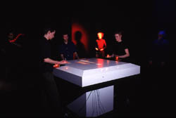

Big Bevelled Button
Multiple users control the creation of an abstract painting and audio
mixing experience. The Audience are able to move their hands gently
over the 3 light sensors on the bevel edge to control the
washes of colour upon the surface of the console.
The visuals move directionally around the display area depending on the
hand distance from the relevant sensor.The audio tracks mix in relation
to the visual marks creating a sonic sculpture generated by the users
gestures.
|
 |